- This lecture covers plotting with Matplotlib and Seaborn. The data are the Fama-French five factors from Lecture 6.
What We'll Cover
Ch 13 (Matplotlib): the anatomy of a plot, the pyplot and object-oriented interfaces, line plots, customization, other plot types, subplots, saving figures, and style sheets.
Ch 14 (Seaborn): distribution, relational, regression, and categorical plots, correlation heatmaps, multi-plot grids, and styling.
Our running data is the Fama-French 5 Factors from Ken French's data library.
Ch 13: Matplotlib
Matplotlib is the foundational plotting library in Python.
Most other Python plotting tools (including
pandas.plot()andseaborn) are built on it.Once you know Matplotlib, you can customize any plot, including ones made by higher-level libraries.
Importing Matplotlib
- The conventional alias for the plotting interface is
plt.
import numpy as np
import pandas as pd
import matplotlib.pyplot as pltLoading Our Data
We'll use the Fama-French 5 Factors dataset as our running example for plotting.
These are monthly factor returns from Kenneth French's data library:
Mkt-RF(market premium),SMB(size),HML(value),RMW(profitability),CMA(investment), andRF(risk-free rate).The cell below downloads the data fresh. It tries
pandas-datareaderfirst and falls back to a direct download if that fails.
import io, zipfile, urllib.request
# Try pandas-datareader first (the cleanest path)
try:
import pandas_datareader.data as web
ff = web.DataReader('F-F_Research_Data_5_Factors_2x3',
'famafrench',
start='1990-01-01',
end='2023-12-31')
ff5 = ff[0]
ff5.index = ff5.index.to_timestamp()
print(f"Loaded via pandas-datareader: {ff5.shape}")
except Exception as e:
# Fallback: download the CSV zip directly from Ken French's website
print(f"pandas-datareader failed ({type(e).__name__}); falling back to direct download.")
url = ("https://mba.tuck.dartmouth.edu/pages/faculty/ken.french/"
"ftp/F-F_Research_Data_5_Factors_2x3_CSV.zip")
req = urllib.request.Request(url, headers={'User-Agent': 'Mozilla/5.0'})
with urllib.request.urlopen(req) as r:
zip_bytes = r.read()
with zipfile.ZipFile(io.BytesIO(zip_bytes)) as z:
raw = z.open(z.namelist()[0]).read().decode('latin1')
# The file has a text header; monthly data starts after a blank-line break.
# Find the first line that begins with a 6-digit YYYYMM and parse from there.
lines = raw.splitlines()
start = next(i for i, ln in enumerate(lines)
if len(ln) >= 6 and ln[:6].isdigit())
end = next((i for i in range(start, len(lines))
if not (len(lines[i]) >= 6 and lines[i][:6].isdigit())),
len(lines))
monthly_csv = "Date,Mkt-RF,SMB,HML,RMW,CMA,RF\n" + "\n".join(lines[start:end])
ff5 = pd.read_csv(io.StringIO(monthly_csv), index_col='Date')
ff5.index = pd.to_datetime(ff5.index, format='%Y%m')
print(f"Loaded via direct download: {ff5.shape}")
ff5.head()Loaded via pandas-datareader: (408, 6)
| Mkt-RF | SMB | HML | RMW | CMA | RF | |
|---|---|---|---|---|---|---|
| Date | ||||||
| 1990-01-01 | -7.80 | -1.21 | 0.83 | -1.12 | 1.40 | 0.57 |
| 1990-02-01 | 1.11 | 1.15 | 0.65 | -0.04 | -0.61 | 0.57 |
| 1990-03-01 | 1.83 | 1.59 | -2.90 | 1.99 | -0.94 | 0.64 |
| 1990-04-01 | -3.36 | -0.35 | -2.57 | 1.78 | -1.00 | 0.69 |
| 1990-05-01 | 8.44 | -2.41 | -3.89 | 1.68 | -1.63 | 0.68 |
Note on units:
- Fama-French factor returns are stored in percent (a value of
1.5means 1.5%). - For plots like cumulative returns, we'll convert to decimal first (divide by 100).
- For histograms of monthly returns, percent is fine but we'll label axes accordingly.
The Anatomy of a Plot
- Every Matplotlib plot has the same three-part structure:
- A Figure is the whole image (the page).
- One or more Axes sit inside the Figure (each Axes is one plot).
- Each Axes has Axis objects (x-axis, y-axis) with ticks and labels.
Two Interfaces
The pyplot interface (
plt.plot(),plt.title(), ...) is quick for simple plots. It operates on the "current" Axes implicitly.The object-oriented interface (
fig, ax = plt.subplots(),ax.plot(), ...) gives you explicit handles and scales to complex layouts.We'll show both. Prefer the object-oriented style for anything beyond a one-liner.
Your First Plot
The pyplot Style
# Quick line plot of one factor
plt.plot(ff5.index, ff5['Mkt-RF'])
plt.title('Market Premium (Mkt-RF), Monthly')
plt.xlabel('Date')
plt.ylabel('Return (%)')
plt.show()
The Object-Oriented Style
plt.subplots()creates a Figure and an Axes and returns both.
fig, ax = plt.subplots()
ax.plot(ff5.index, ff5['Mkt-RF'])
ax.set_title('Market Premium (Mkt-RF), Monthly')
ax.set_xlabel('Date')
ax.set_ylabel('Return (%)')
plt.show()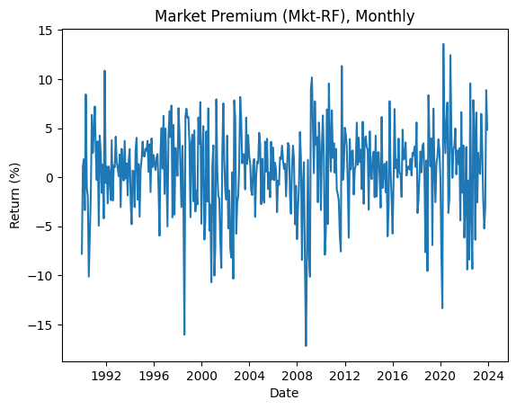
- The plots look identical. We'll use the OO style from here on.
Line Plots
Multiple Lines on One Axes
- Call
ax.plot()multiple times to overlay several series.
fig, ax = plt.subplots(figsize=(10, 4))
ax.plot(ff5.index, ff5['Mkt-RF'], label='Mkt-RF')
ax.plot(ff5.index, ff5['SMB'], label='SMB')
ax.plot(ff5.index, ff5['HML'], label='HML')
ax.set_xlabel('Date')
ax.set_ylabel('Monthly return (%)')
ax.set_title('Three Fama-French Factors')
ax.legend()
plt.show()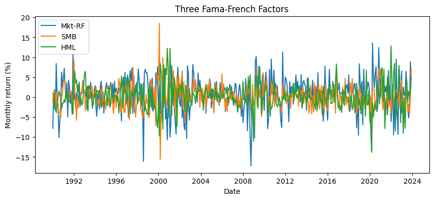
Cumulative Returns (Converting Percent to Decimal)
- Cumulative wealth
(1+r).cumprod()requires returns in decimal form.
# Convert from % to decimal, then compute cumulative wealth
cum_wealth = (1 + ff5[['Mkt-RF', 'SMB', 'HML']] / 100).cumprod()
fig, ax = plt.subplots(figsize=(10, 4))
ax.plot(cum_wealth.index, cum_wealth['Mkt-RF'], label='Mkt-RF')
ax.plot(cum_wealth.index, cum_wealth['SMB'], label='SMB')
ax.plot(cum_wealth.index, cum_wealth['HML'], label='HML')
ax.set_xlabel('Date')
ax.set_ylabel('Cumulative wealth ($1 invested)')
ax.set_title('Cumulative Returns of Three Factors')
ax.legend()
plt.show()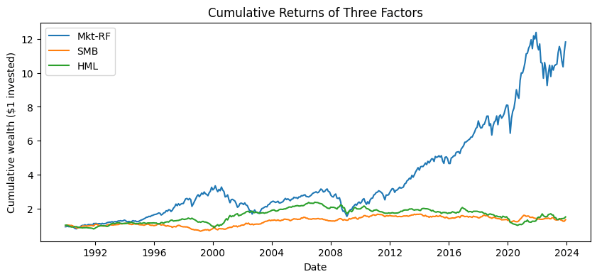
Mkt-RFcompounds to a much larger multiple thanSMBorHMLover 30+ years.
Plot Customization
Color, Line Style, Width, Markers
fig, ax = plt.subplots(figsize=(10, 4))
ax.plot(ff5.index, ff5['Mkt-RF'],
color='steelblue',
linestyle='-',
linewidth=1.2,
label='Mkt-RF')
ax.plot(ff5.index, ff5['Mkt-RF'].rolling(12).mean(),
color='red',
linestyle='--',
linewidth=2,
label='12-month rolling mean')
ax.set_title('Market Premium with 1-Year Rolling Mean')
ax.set_ylabel('Return (%)')
ax.legend()
plt.show()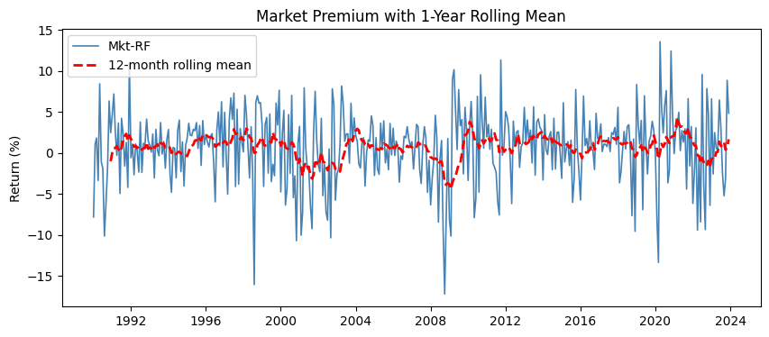
Reference Lines: axhline and axvline
fig, ax = plt.subplots(figsize=(10, 4))
ax.plot(ff5.index, ff5['Mkt-RF'], color='steelblue', linewidth=0.8)
ax.axhline(0, color='black', linewidth=0.8) # zero line
ax.axhline(ff5['Mkt-RF'].mean(), color='red',
linestyle='--', label='Long-run mean')
ax.set_title('Monthly Market Premium with Zero and Mean Lines')
ax.set_ylabel('Return (%)')
ax.legend()
plt.show()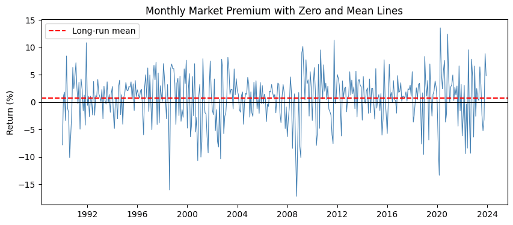
Grid
fig, ax = plt.subplots(figsize=(8, 3))
ax.plot(ff5.loc['2020', 'Mkt-RF'])
ax.set_title('2020 Market Premium')
ax.set_ylabel('Return (%)')
ax.grid(True, alpha=0.3)
plt.show()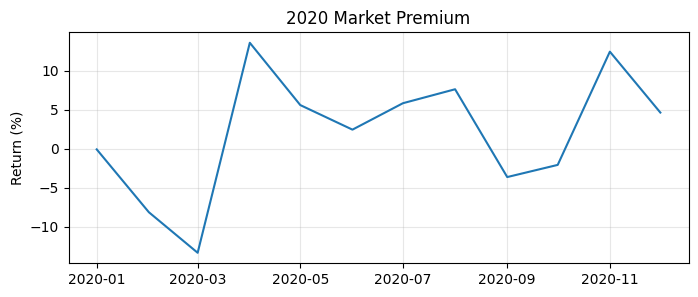
Other Plot Types
Histogram
- Use
ax.hist()to see the distribution of values.
fig, ax = plt.subplots(figsize=(8, 4))
ax.hist(ff5['Mkt-RF'], bins=40, color='steelblue', edgecolor='white')
ax.set_title('Distribution of Monthly Market Premium')
ax.set_xlabel('Monthly return (%)')
ax.set_ylabel('Count')
plt.show()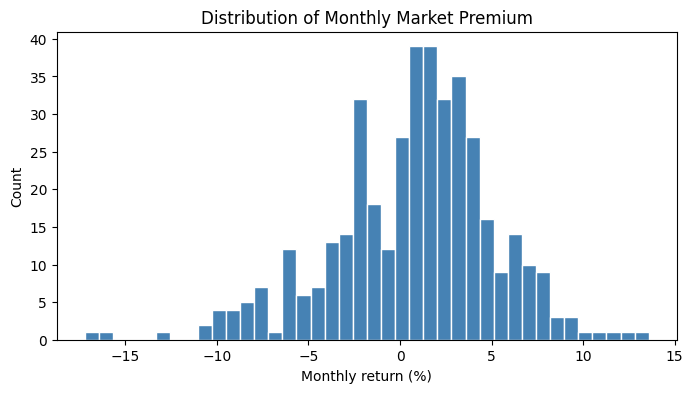
Scatter Plot
- Use
ax.scatter()to plot pairs of points.
# Do small-cap and value premia move together?
fig, ax = plt.subplots(figsize=(6, 6))
ax.scatter(ff5['SMB'], ff5['HML'], alpha=0.4, s=15)
ax.set_xlabel('SMB (%)')
ax.set_ylabel('HML (%)')
ax.set_title('SMB vs HML Monthly Returns')
ax.axhline(0, color='black', linewidth=0.5)
ax.axvline(0, color='black', linewidth=0.5)
plt.show()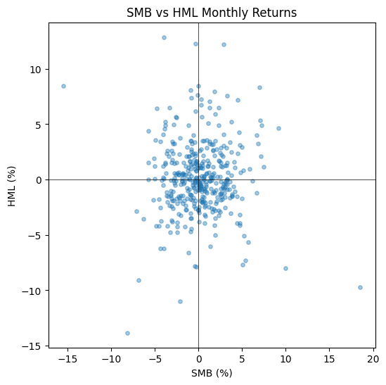
Bar Chart
- Use
ax.bar()for vertical bars (categorical x-axis).
# Average monthly return of each factor
mean_returns = ff5[['Mkt-RF', 'SMB', 'HML', 'RMW', 'CMA']].mean()
fig, ax = plt.subplots(figsize=(7, 4))
ax.bar(mean_returns.index, mean_returns.values, color='steelblue')
ax.axhline(0, color='black', linewidth=0.8)
ax.set_title('Average Monthly Premium by Factor (1990-2023)')
ax.set_ylabel('Average return (%)')
plt.show()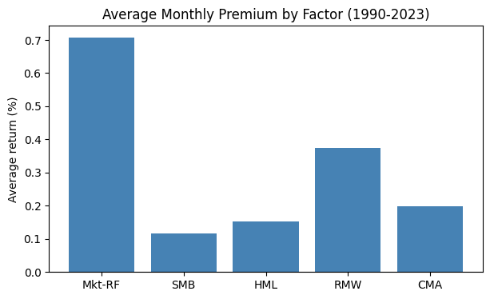
Boxplot
- A boxplot summarizes a distribution: median, quartiles, whiskers, and outliers.
fig, ax = plt.subplots(figsize=(7, 4))
ax.boxplot([ff5['Mkt-RF'], ff5['SMB'], ff5['HML'], ff5['RMW'], ff5['CMA']],
tick_labels=['Mkt-RF', 'SMB', 'HML', 'RMW', 'CMA'])
ax.axhline(0, color='red', linewidth=0.8, linestyle='--')
ax.set_ylabel('Monthly return (%)')
ax.set_title('Distribution of Each Factor')
plt.show()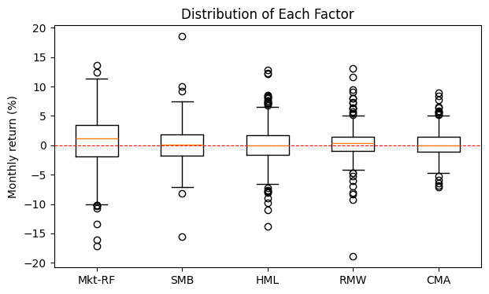
Subplots
Use
plt.subplots(nrows, ncols)to lay out multiple Axes in a grid.The returned
axis a NumPy array of Axes objects.
factors = ['Mkt-RF', 'SMB', 'HML', 'RMW']
fig, axes = plt.subplots(nrows=2, ncols=2, figsize=(10, 6))
for ax, factor in zip(axes.flat, factors):
ax.hist(ff5[factor], bins=30, color='steelblue', edgecolor='white')
ax.set_title(factor)
ax.set_xlabel('Monthly return (%)')
fig.suptitle('Distributions of Four Fama-French Factors', fontsize=14)
fig.tight_layout()
plt.show()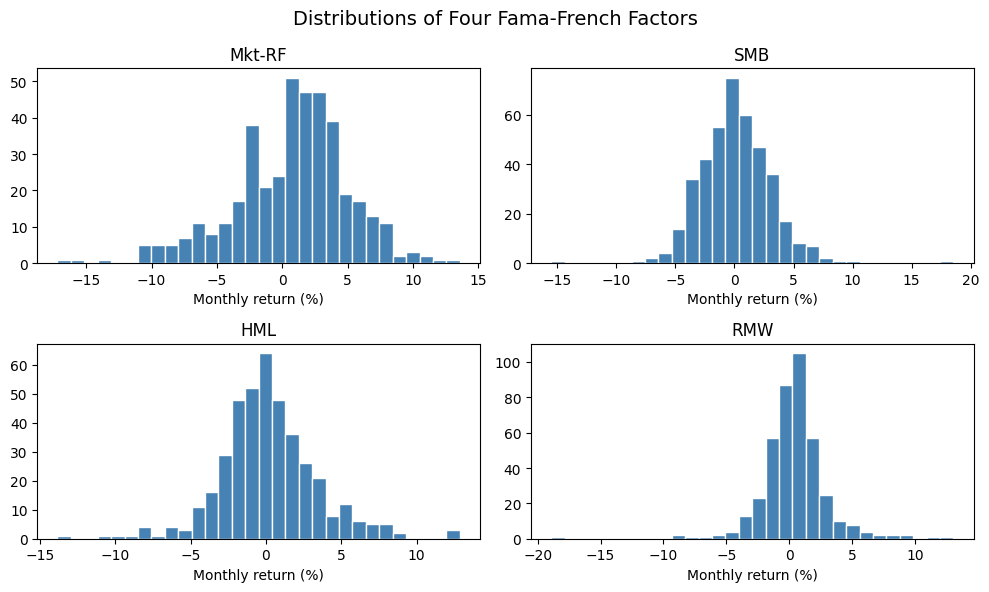
axes.flatgives a flat iterator over all Axes regardless of grid shape.fig.tight_layout()automatically adjusts spacing so titles and labels don't overlap.
Saving Figures
Use
fig.savefig()to write a figure to disk.The format is inferred from the file extension (
.png,.pdf,.svg, ...).
fig, ax = plt.subplots(figsize=(8, 4))
ax.plot(ff5.index, ff5['Mkt-RF'])
ax.set_title('Market Premium')
ax.set_ylabel('Return (%)')
fig.savefig('mkt_rf.png', dpi=150, bbox_inches='tight')
plt.show()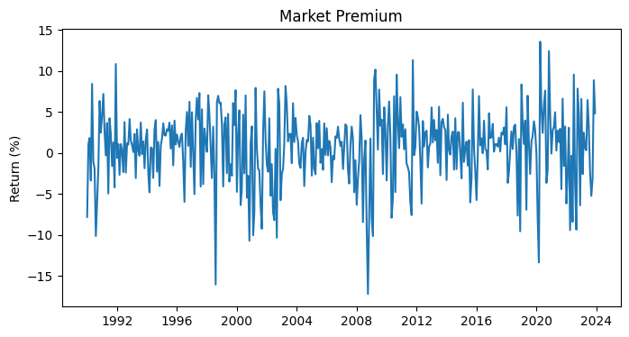
dpi=150controls resolution;bbox_inches='tight'trims whitespace.
Style Sheets
plt.style.use(name)applies a preset look-and-feel.Useful built-ins:
'ggplot','seaborn-v0_8','fivethirtyeight','classic'.
# See what styles are available
print(plt.style.available[:10])['Solarize_Light2', '_classic_test_patch', '_mpl-gallery', '_mpl-gallery-nogrid', 'bmh', 'classic', 'dark_background', 'fast', 'fivethirtyeight', 'ggplot']
# Apply a style for the rest of the notebook
plt.style.use('ggplot')
fig, ax = plt.subplots(figsize=(8, 3))
ax.plot(ff5.index, ff5['Mkt-RF'])
ax.set_title('Market Premium (ggplot style)')
ax.set_ylabel('Return (%)')
plt.show()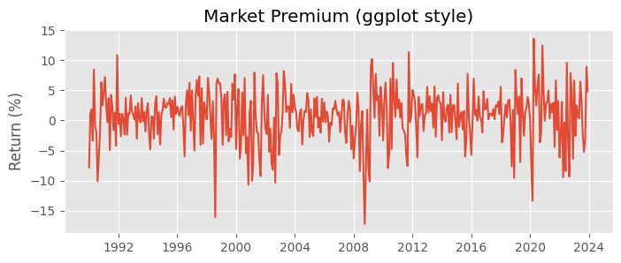
# Reset to default style before continuing
plt.style.use('default')Note: common pitfall
Forgetting
plt.show()at the end of a cell still produces a plot in a notebook, but you'll also see noise like<matplotlib.lines.Line2D at 0x...>.Calling
plt.show()(or assigning to_) keeps the output clean.
# This works in a notebook but prints a stray repr line first.
fig, ax = plt.subplots(figsize=(6, 2))
ax.plot([1, 2, 3], [1, 4, 9])[<matplotlib.lines.Line2D at 0x7e1da3c65d10>]
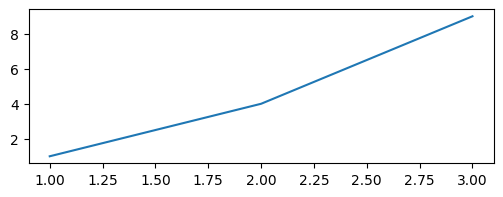
In-Class Exercise
13-1. Line Plot:
- Plot the
RF(risk-free rate) series fromff5as a line plot using the object-oriented interface. - Add a title
'Risk-Free Rate, Monthly', an x-label'Date', and a y-label'Rate (%)'.
13-2. Cumulative Wealth Comparison:
- Compute the cumulative wealth of
Mkt-RFandRMW(convert from percent to decimal first). - Plot both on the same Axes with distinct colors and a legend.
- Set
figsize=(10, 4)and give the plot an appropriate title.
13-3. Histogram with Reference Line:
- Plot a histogram of
HMLwith 40 bins. - Add a vertical dashed red line at the mean of
HMLusingax.axvline(). - Label the axes appropriately.
13-4. Side-by-Side Subplots:
- Create a figure with 1 row and 2 columns using
plt.subplots(1, 2, figsize=(12, 4)). - On the left, plot
Mkt-RFover time as a line. - On the right, plot a histogram of
Mkt-RF. - Add appropriate titles to each subplot.
13-5. Customized Scatter:
- Make a scatter plot of
Mkt-RF(x) vsSMB(y). - Use
alpha=0.3for transparency ands=10for point size. - Add horizontal and vertical zero lines using
axhline(0)andaxvline(0). - Save the figure to
'mkt_vs_smb.png'withdpi=150.
Ch 14: Seaborn
Seaborn is a high-level statistical visualization library built on top of Matplotlib.
It produces attractive plots with less code, and is especially good at:
- distribution plots
- regression plots
- categorical comparisons
- correlation heatmaps
Seaborn understands
pandasDataFrames natively. You usually passdata=dfand reference columns by name.
Importing Seaborn
- The conventional alias for Seaborn is
sns.
import seaborn as sns
sns.set_theme(style='whitegrid')sns.set_theme()applies Seaborn's default styling to all subsequent Matplotlib plots.Common style choices:
'darkgrid','whitegrid','dark','white','ticks'.
Distribution Plots
histplot(): Histograms with Density
fig, ax = plt.subplots(figsize=(8, 4))
sns.histplot(data=ff5, x='Mkt-RF', bins=40, kde=True, ax=ax)
ax.set_title('Distribution of Mkt-RF (with KDE)')
ax.set_xlabel('Monthly return (%)')
plt.show()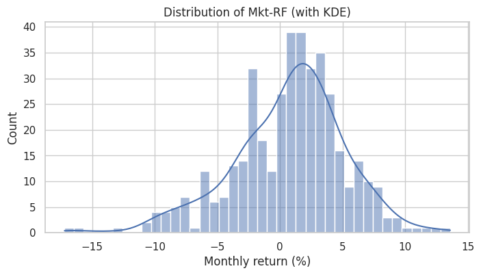
kde=Trueoverlays a kernel density estimate (a smoothed estimate of the distribution).
kdeplot(): Compare Distributions
- Plot densities of multiple factors on the same Axes to compare their shapes.
fig, ax = plt.subplots(figsize=(8, 4))
for factor in ['Mkt-RF', 'SMB', 'HML']:
sns.kdeplot(data=ff5, x=factor, label=factor, ax=ax)
ax.set_title('Distribution Comparison: Mkt-RF, SMB, HML')
ax.set_xlabel('Monthly return (%)')
ax.legend()
plt.show()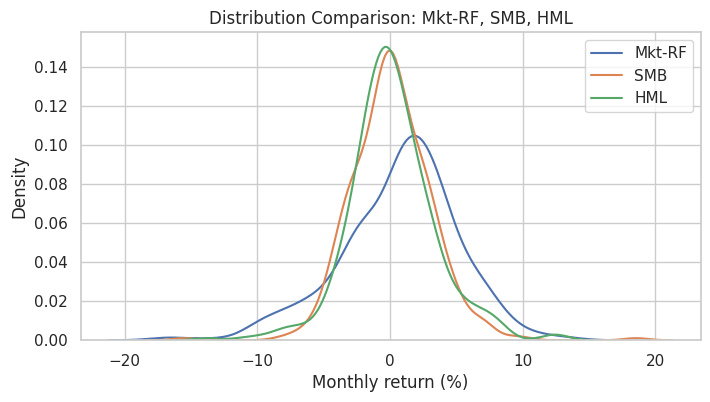
boxplot() and violinplot()
Box and violin plots compare distributions across categories.
They work best with data in long format, so we
meltthe DataFrame first.
ff5_long = ff5[['Mkt-RF', 'SMB', 'HML', 'RMW', 'CMA']].melt(
var_name='factor', value_name='return'
)
ff5_long.head()| factor | return | |
|---|---|---|
| 0 | Mkt-RF | -7.80 |
| 1 | Mkt-RF | 1.11 |
| 2 | Mkt-RF | 1.83 |
| 3 | Mkt-RF | -3.36 |
| 4 | Mkt-RF | 8.44 |
fig, ax = plt.subplots(figsize=(8, 4))
sns.boxplot(data=ff5_long, x='factor', y='return', ax=ax)
ax.axhline(0, color='red', linestyle='--', linewidth=0.8)
ax.set_title('Monthly Return Distribution by Factor')
ax.set_ylabel('Return (%)')
plt.show()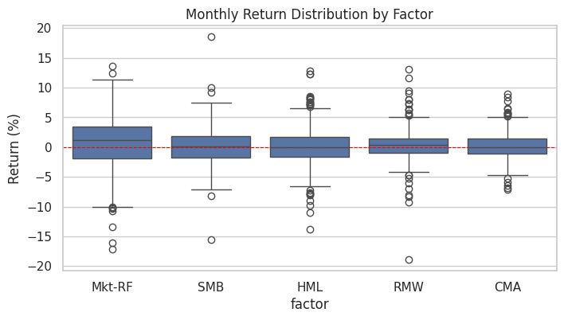
# A violin plot shows the full KDE on each side
fig, ax = plt.subplots(figsize=(8, 4))
sns.violinplot(data=ff5_long, x='factor', y='return', ax=ax)
ax.axhline(0, color='red', linestyle='--', linewidth=0.8)
ax.set_title('Violin Plot of Monthly Returns by Factor')
ax.set_ylabel('Return (%)')
plt.show()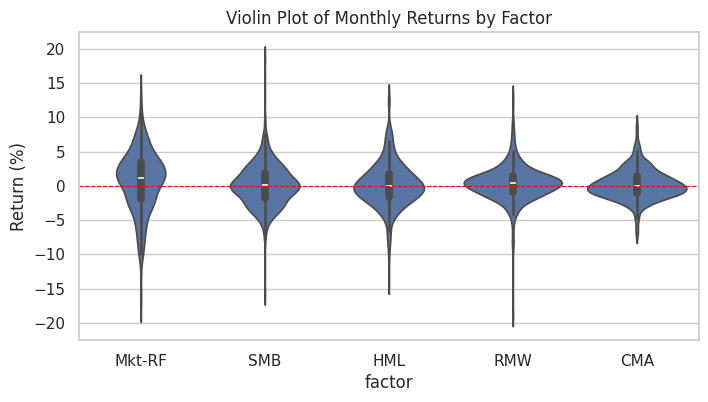
Relational Plots
scatterplot() with a hue
huecolors points by a categorical (or numeric) column.
# Add a decade column for color-coding
ff5_demo = ff5.copy()
ff5_demo['decade'] = (ff5_demo.index.year // 10 * 10).astype(str) + 's'
ff5_demo.head()| Mkt-RF | SMB | HML | RMW | CMA | RF | decade | |
|---|---|---|---|---|---|---|---|
| Date | |||||||
| 1990-01-01 | -7.80 | -1.21 | 0.83 | -1.12 | 1.40 | 0.57 | 1990s |
| 1990-02-01 | 1.11 | 1.15 | 0.65 | -0.04 | -0.61 | 0.57 | 1990s |
| 1990-03-01 | 1.83 | 1.59 | -2.90 | 1.99 | -0.94 | 0.64 | 1990s |
| 1990-04-01 | -3.36 | -0.35 | -2.57 | 1.78 | -1.00 | 0.69 | 1990s |
| 1990-05-01 | 8.44 | -2.41 | -3.89 | 1.68 | -1.63 | 0.68 | 1990s |
fig, ax = plt.subplots(figsize=(7, 6))
sns.scatterplot(data=ff5_demo, x='Mkt-RF', y='SMB', hue='decade',
alpha=0.6, ax=ax)
ax.axhline(0, color='black', linewidth=0.5)
ax.axvline(0, color='black', linewidth=0.5)
ax.set_title('Mkt-RF vs SMB, Colored by Decade')
plt.show()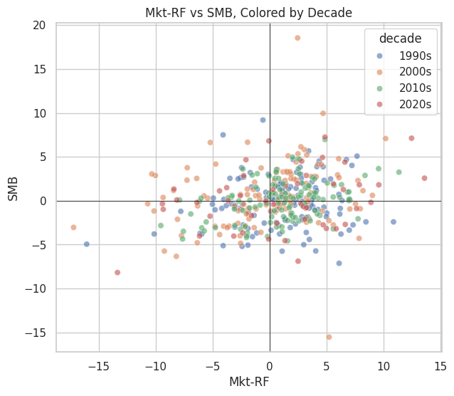
lineplot() with a confidence band
lineplotis convenient when you have repeated observations and want a mean line with a confidence band.
# Mean monthly return by year, with confidence band
ff5_demo['year'] = ff5_demo.index.year
fig, ax = plt.subplots(figsize=(10, 4))
sns.lineplot(data=ff5_demo, x='year', y='Mkt-RF', ax=ax,
errorbar=('ci', 95))
ax.axhline(0, color='red', linewidth=0.8, linestyle='--')
ax.set_title('Mean Monthly Market Premium by Year (with 95% CI)')
ax.set_ylabel('Monthly return (%)')
plt.show()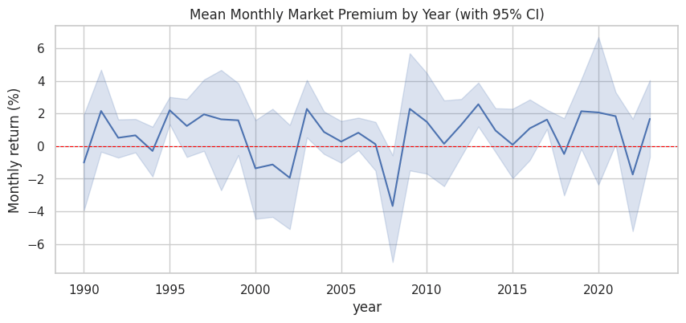
Regression Plots
regplot(): Scatter with Regression Line
- Adds a linear-regression fit and a confidence band on top of a scatter plot.
fig, ax = plt.subplots(figsize=(7, 5))
sns.regplot(data=ff5, x='Mkt-RF', y='HML', scatter_kws={'alpha': 0.4, 's': 15}, ax=ax)
ax.set_title('Value Premium (HML) vs Market Premium (Mkt-RF)')
ax.set_xlabel('Mkt-RF (%)')
ax.set_ylabel('HML (%)')
plt.show()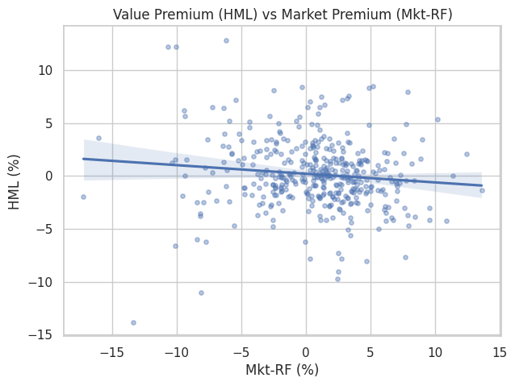
- The shaded band is the 95% confidence interval for the regression line.
lmplot(): Regression by Group
lmplotfits a separate regression for each level of a categoricalhuevariable.
# Split decades into 'early' (1990-2009) and 'late' (2010-2023)
ff5_demo['era'] = np.where(ff5_demo.index.year < 2010, 'Early (1990-2009)', 'Late (2010-2023)')
sns.lmplot(data=ff5_demo, x='Mkt-RF', y='HML', hue='era',
height=5, aspect=1.2,
scatter_kws={'alpha': 0.4, 's': 15})
plt.title('HML vs Mkt-RF: Two Eras')
plt.show()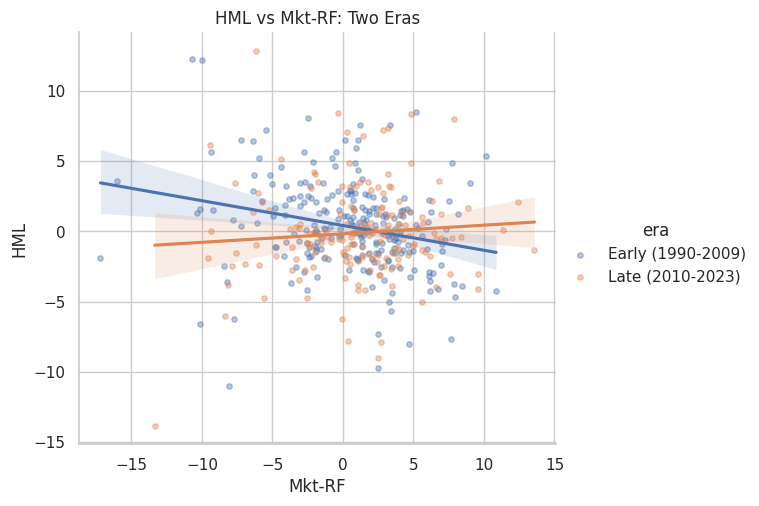
lmplotreturns aFacetGrid, not an Axes, so we useplt.title()rather thanax.set_title().
Categorical Plots
barplot(): Mean and Confidence Interval
barplotcomputes the mean ofyfor each level ofxby default, plus a confidence interval.
fig, ax = plt.subplots(figsize=(8, 4))
sns.barplot(data=ff5_demo, x='decade', y='Mkt-RF', ax=ax)
ax.axhline(0, color='black', linewidth=0.8)
ax.set_title('Mean Monthly Market Premium by Decade')
ax.set_ylabel('Mean return (%)')
plt.show()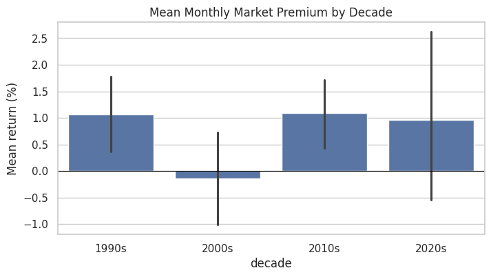
countplot(): Frequency of Each Category
# How many up vs down market months in each decade?
ff5_demo['direction'] = np.where(ff5_demo['Mkt-RF'] > 0, 'up', 'down')
fig, ax = plt.subplots(figsize=(8, 4))
sns.countplot(data=ff5_demo, x='decade', hue='direction', ax=ax)
ax.set_title('Up vs Down Market Months by Decade')
ax.set_ylabel('Number of months')
plt.show()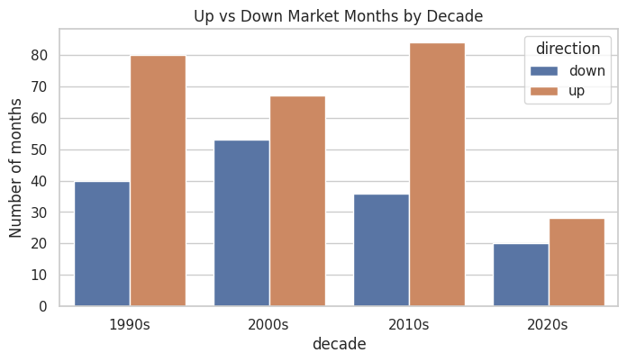
Matrix Plot: Correlation Heatmap
- A correlation heatmap shows how factors move together at a glance.
corr = ff5[['Mkt-RF', 'SMB', 'HML', 'RMW', 'CMA']].corr()
corr| Mkt-RF | SMB | HML | RMW | CMA | |
|---|---|---|---|---|---|
| Mkt-RF | 1.000000 | 0.231935 | -0.111981 | -0.314162 | -0.329824 |
| SMB | 0.231935 | 1.000000 | 0.000160 | -0.458621 | -0.043114 |
| HML | -0.111981 | 0.000160 | 1.000000 | 0.317990 | 0.660124 |
| RMW | -0.314162 | -0.458621 | 0.317990 | 1.000000 | 0.218510 |
| CMA | -0.329824 | -0.043114 | 0.660124 | 0.218510 | 1.000000 |
fig, ax = plt.subplots(figsize=(6, 5))
sns.heatmap(corr, annot=True, fmt='.2f',
cmap='RdBu_r', center=0,
vmin=-1, vmax=1,
square=True, ax=ax)
ax.set_title('Correlation of Fama-French Factors')
plt.show()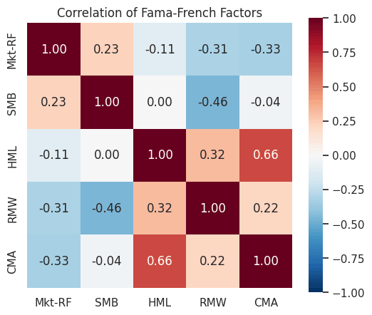
annot=Truewrites the value in each cell;fmt='.2f'formats to two decimals.cmap='RdBu_r'is a diverging palette ideal for correlations: red = positive, blue = negative.center=0ensures the colormap is symmetric around zero.
Multi-Plot Grids
pairplot(): All-Pairs Scatter Matrix
pairplotshows scatter plots for every pair of variables and histograms on the diagonal.
sns.pairplot(ff5[['Mkt-RF', 'SMB', 'HML', 'RMW']],
plot_kws={'alpha': 0.3, 's': 10},
diag_kind='hist',
height=2)
plt.suptitle('Pairwise Relationships Among Factors', y=1.02)
plt.show()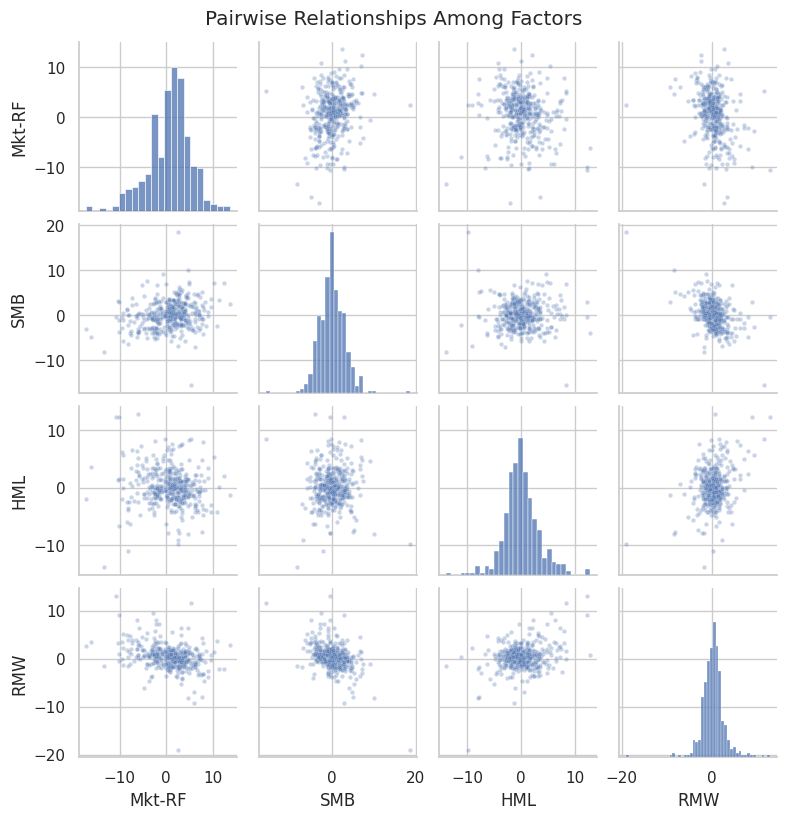
Faceting with catplot
catplotandrelplotcreate grids of plots split by one or two categorical variables.
# Build a long-format frame that carries decade through the melt
ff5_long_dec = (ff5_demo[['Mkt-RF', 'SMB', 'HML', 'RMW', 'CMA', 'decade']]
.melt(id_vars='decade', var_name='factor', value_name='return'))
sns.catplot(data=ff5_long_dec, x='factor', y='return', col='decade',
kind='box', col_wrap=2, height=3.5, aspect=1.3, sharey=True)
plt.show()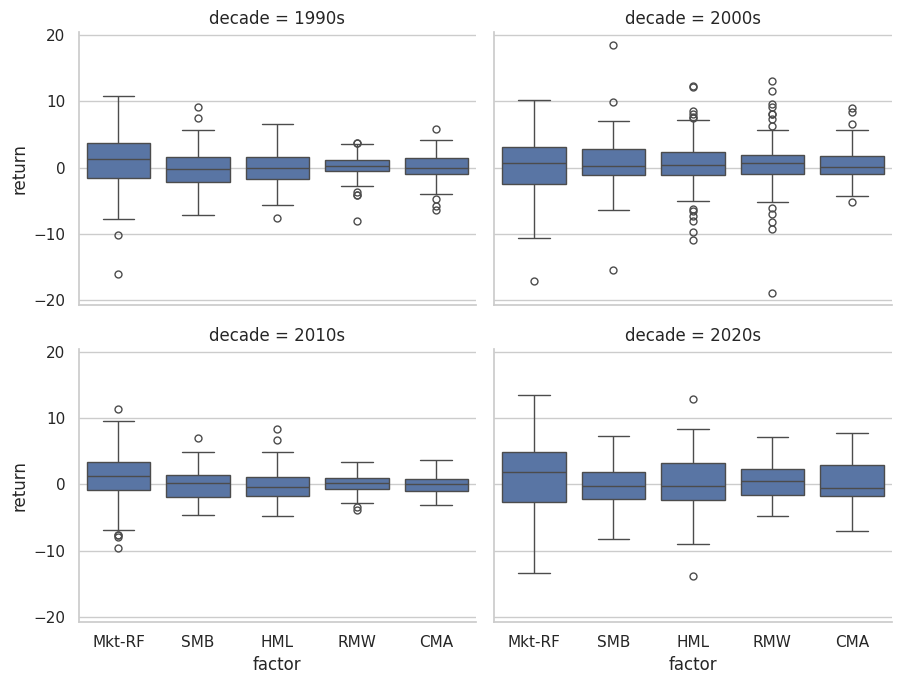
The
col_wrap=2argument wraps the facets into a 2-column grid.We melted with
id_vars='decade'sodecadesurvives the wide-to-long reshape.
Styling and Palettes
Themes
sns.set_theme(style=..., palette=...)configures the global look.
# Show a few palette options
for palette in ['deep', 'pastel', 'colorblind']:
print(palette)
sns.palplot(sns.color_palette(palette))deep pastel colorblind
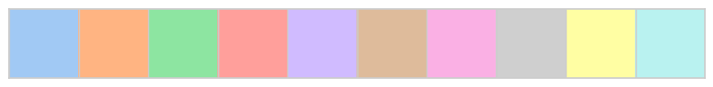
Per-Plot Palette
- You can also pass
palette=to most Seaborn functions for one-off control.
fig, ax = plt.subplots(figsize=(8, 4))
sns.boxplot(data=ff5_long, x='factor', y='return',
hue='factor', palette='Set2', legend=False, ax=ax)
ax.axhline(0, color='red', linestyle='--', linewidth=0.8)
ax.set_title('Boxplot with Set2 Palette')
ax.set_ylabel('Return (%)')
plt.show()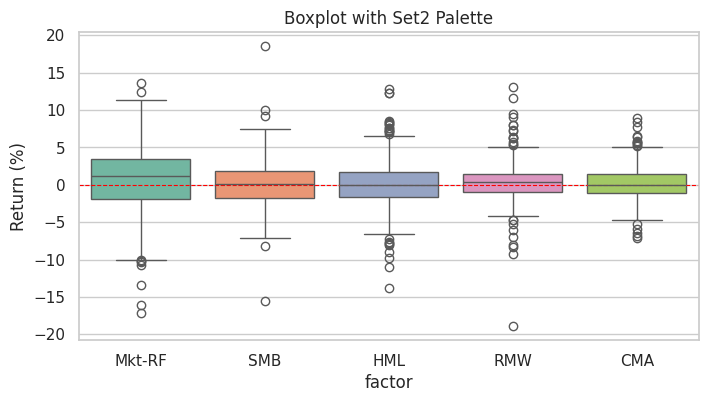
Matplotlib + Seaborn Together
Seaborn returns Matplotlib Axes (for most functions), so you can mix the two freely.
Use Seaborn for the statistical layer, then add Matplotlib annotations on top.
fig, ax = plt.subplots(figsize=(8, 5))
# Seaborn regression layer
sns.regplot(data=ff5, x='Mkt-RF', y='SMB',
scatter_kws={'alpha': 0.3, 's': 12},
ax=ax)
# Matplotlib annotations on the same Axes
ax.axhline(0, color='black', linewidth=0.5)
ax.axvline(0, color='black', linewidth=0.5)
ax.annotate('Tech-bust cluster',
xy=(-15, -10),
xytext=(-25, -15),
arrowprops={'arrowstyle': '->'})
ax.set_title('SMB vs Mkt-RF (Seaborn + Matplotlib)')
plt.show()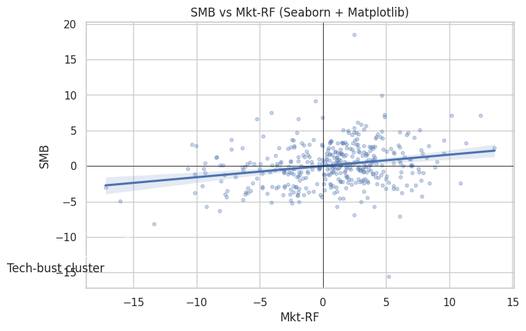
In-Class Exercise
14-1. Distribution Plot:
- Use
sns.histplot()withkde=Trueto plot the distribution ofRMW. - Set
bins=40and give the plot a title and x-label.
14-2. Comparing Distributions:
- Use
sns.kdeplot()to overlay the densities ofMkt-RF,SMB, andHMLon a single Axes. - Add a legend and an appropriate title.
14-3. Regression Plot:
- Use
sns.regplot()to plotMkt-RF(x) againstRMW(y). - Use semi-transparent markers (
alpha=0.4) and a reasonable point size. - What sign does the fitted line have? (Brief written answer in a markdown comment is fine.)
14-4. Correlation Heatmap:
- Compute the correlation matrix of the five factors
['Mkt-RF', 'SMB', 'HML', 'RMW', 'CMA']. - Plot it with
sns.heatmap()usingannot=True,cmap='RdBu_r',center=0, andvmin=-1, vmax=1. - Which two factors are most negatively correlated?
14-5. Categorical Comparison by Decade:
- Create a
decadecolumn (e.g.,'1990s','2000s', ...) on a copy offf5. - Use
sns.barplot()to show the mean monthlyMkt-RFby decade with confidence intervals. - Add a zero-line with
ax.axhline(0)for reference.
14-6. Pairplot:
- Use
sns.pairplot()to plot all pairwise relationships amongMkt-RF,SMB,HML, andCMA. - Use semi-transparent markers and histograms on the diagonal.